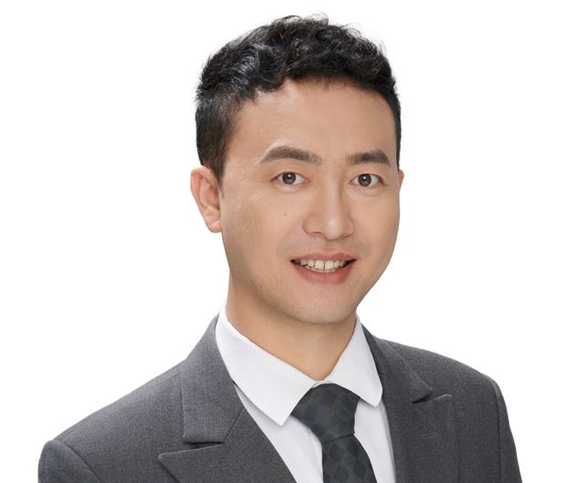

Jasper Zhang
张智杰
我把 AI 和感知算法变成量产的芯片。🧠⚡🚗
张智杰（Jasper Zhang），AI 芯片技术规划经理，现在做智能座舱与 ADAS 的芯片定义。之前九年一直在自动驾驶一线：在博世主导过东风两段式端到端智驾系统量产，在商汤做过感知与端到端模型，在比亚迪做过行泊一体，在泛亚和通用做过全球车型的系统工程。带过四年跨职能团队。北航本硕。
经历
2026~ · AI 芯片技术规划
负责 AI 芯片的技术与产品规划。把算法侧的需求翻译成芯片规格，在算力、带宽、成本和量产节奏之间找平衡。
2025 — 2026 · 博世
端到端技术开发经理。主导东风两段式端到端智驾系统量产：感知模型的架构、训练、工程化部署，推到多个车型平台（哪吒、一汽等）。组建跨职能团队，把需求到开发再到验证这条链子理顺，开发周期明显缩短。
2022 — 2025 · 商汤科技
高级感知算法系统工程师。做智驾的感知模型和端到端模型，从方案设计到训练再到工程落地。团队拿了商汤杰出团队奖。
2021 — 2022 · 比亚迪
高级智能驾驶系统工程师。主导行泊一体泊车系统的方案：应用层和接口定义、功能矩阵与规范、域控性能预算、功能安全与降级策略，最后量产落地。
2017 — 2021 · 泛亚
系统工程师。做通用全球车型的系统工程，和北美、韩国、欧洲、巴西的研发中心一起干活，从需求、电子电气、软硬件集成一直到量产。
2009 — 2017 · 北京航空航天大学
航空工程硕士，飞行器设计与工程本科。两次校级优秀毕业生。
技能
感知模型设计 · 端到端模型设计 · 模型量化与部署 · 域控制器系统架构设计 · 相机标定 · 数据链路与工具链 · 六西格玛绿带 · 技术文档与商务英语
荣誉
商汤杰出团队奖 · 泛亚技术创新大赛二等奖 · 泛亚项目成本优秀奖 · 北航优秀毕业生（硕士 / 本科）
杂项
喜欢把研究变成能交付的东西。信奉清晰的系统思维、写得好的规范文档，还有那种快而不乱的团队。工作之外会看 AI 硬件的进展、也常想芯片和软件到底会把出行带向哪里。📚🚀
联系
GitHub: github.com/OrangeManBest · 邮箱: zhangzhijie126@163.comGitHub: github.com/OrangeManBest · Email: zhangzhijie126@163.com